| Date | Number | Title |
|---|---|---|
| March 4, 2021, 1:51 PM PST | 1124 | [ME] Update PCR and antigen testing to complete full time series of tested residents |
| March 4, 2021, 1:51 PM PST | 1124 | [ME] Update PCR and antigen testing to complete full time series of tested residents |
| November 2, 2020, 10:46 PM PST | 924 | [ME] Backfilling first day reporting Antigen tests (11/2) |
| September 24, 2020, 6:59 AM PDT | 862 | [ME] Did not update testing update for 9/22 |
| September 16, 2020, 7:00 AM PDT | 837 | [ME] Explicit Probables Backfill |
| September 16, 2020, 6:50 AM PDT | 836 | [ME] Incorrect positive cases (PCR) values on 6/9 and 6/3 |
| July 29, 2020, 7:05 AM PDT | 691 | [ME] PCL Historicals (3/15-4/28) |
| July 13, 2020, 11:41 AM PDT | 619 | [ME] Patching Total Tests Skipped 7/11 |
| June 25, 2020, 8:32 AM PDT | 536 | [ME] Decrease in Deaths (confirmed) on 6/23 |
| June 25, 2020, 6:34 AM PDT | 524 | [ME] PCL Historicals and WS2 |
| June 22, 2020, 9:34 AM PDT | 512 | [ME] Maine data page is now wrong |
| April 8, 2020, 9:01 AM PDT | 169 | PUBLISH TIME |
#1124: [ME] Update PCR and antigen testing to complete full time series of tested residents
Issue number 1124
space-buzzer opened this issue on March 4, 2021, 1:51 PM PST
Labels Data quality stale
Source: https://www.maine.gov/dhhs/mecdc/infectious-disease/epi/airborne/coronavirus/data.shtml
The testing time series, available in the "Daily Testing Data" tab is a complete time series for PCR and antigen testing. The difference between this time series and the values we were previously using is that the previous values (the daily snapshot data table at the bottom of the page) contains both residents and non residents tested in Maine. This time series includes only residents.
Comments
This issue has been automatically marked as stale because it has not had recent activity. It will be closed if no further activity occurs. Thank you for your contributions!
This issue has been closed because it was stale for 15 days, and there was no further activity on it for 10 days. You can feel free to re-open it if the issue is important, and label it as "not stale."
#1124: [ME] Update PCR and antigen testing to complete full time series of tested residents
Issue number 1124
space-buzzer opened this issue on March 4, 2021, 1:51 PM PST
Labels Data quality stale
Source: https://www.maine.gov/dhhs/mecdc/infectious-disease/epi/airborne/coronavirus/data.shtml
The testing time series, available in the "Daily Testing Data" tab is a complete time series for PCR and antigen testing. The difference between this time series and the values we were previously using is that the previous values (the daily snapshot data table at the bottom of the page) contains both residents and non residents tested in Maine. This time series includes only residents.
Comments
This issue has been automatically marked as stale because it has not had recent activity. It will be closed if no further activity occurs. Thank you for your contributions!
This issue has been closed because it was stale for 15 days, and there was no further activity on it for 10 days. You can feel free to re-open it if the issue is important, and label it as "not stale."
#924: [ME] Backfilling first day reporting Antigen tests (11/2)
Issue number 924
jaclyde opened this issue on November 2, 2020, 10:46 PM PST
Labels Data quality
State: Maine
Issue: Maine started Reporting Total, Positive, and Negative Antigen tests. Backfilling today's values.
Source: State Page: https://www.maine.gov/dhhs/mecdc/infectious-disease/epi/airborne/coronavirus/data.shtml Screenshot: screencapture-maine-gov-dhhs-mecdc-infectious-disease-epi-airborne-coronavirus-data-shtml-2020-11-02-22_44_58.pdf
Comments
AFTER: 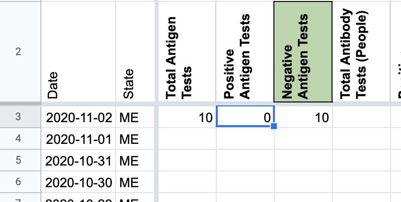
#862: [ME] Did not update testing update for 9/22
Issue number 862
the-daniel-lin opened this issue on September 24, 2020, 6:59 AM PDT
Labels Backfill Data quality
State or US: Maine
Describe the problem On 9/22, due to technical difficulties, ME did not update their testing data, so CTP carried over values for total, positive, and negative antibody and PCR tests. On 9/23, CTP recorded data as of 9/21 where we should have recorded data as of 9/22.
We need to:
- Take the testing values from 9/23 (as of 9/21) and record them for 9/22
- Record testing values in 9/23 with data as of 9/22
Link to data source https://www.maine.gov/dhhs/mecdc/infectious-disease/epi/airborne/coronavirus/data.shtml
Comments
BEFORE: 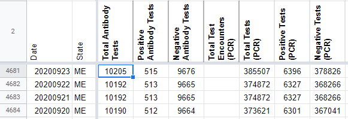
AFTER: 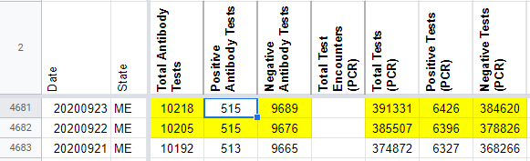
#837: [ME] Explicit Probables Backfill
Issue number 837
jesseandersonumd opened this issue on September 16, 2020, 7:00 AM PDT
Labels Backfill Historical Data
State or US: ME
Describe the problem CTP started reporting probables on 7/28. ME started reporting values for probables on 5/4, and we can reasonably backfill by calculating positive (confirmed + probables) - positive PCR cases back until 5/4.
Link to data source
- CTP screenshots [https://covidtracking.com/data/state/maine/screenshots] 5/4-7/28
PROPOSED VALUES (from 5/4-9/15)
503 502 487 485 475 473 476 469 471 472 470 468 472 467 467 466 465 457 455 453 447 449 446 445 445 438 441 435 432 430 421 418 418 410 408 406 408 417 417 415 415 424 427 429 423 421 413 411 409 405 410 406 403 400 403 402 423 424 421 394 397 391 392 398 399 396 389 389 394 395 390 389 387 385 388 377 372 360 356 353 345 344 339 337 339 331 328 328 327 323 327 320 315 307 305 301 287 287 284 283 275 271 272 265 266 259 256 258 257 255 238 223 215 216 210 209 199 199 187 180 180 176 171 166 160 143 139 134 124 121 110 99 80 76 69
Comments
BEFORE: 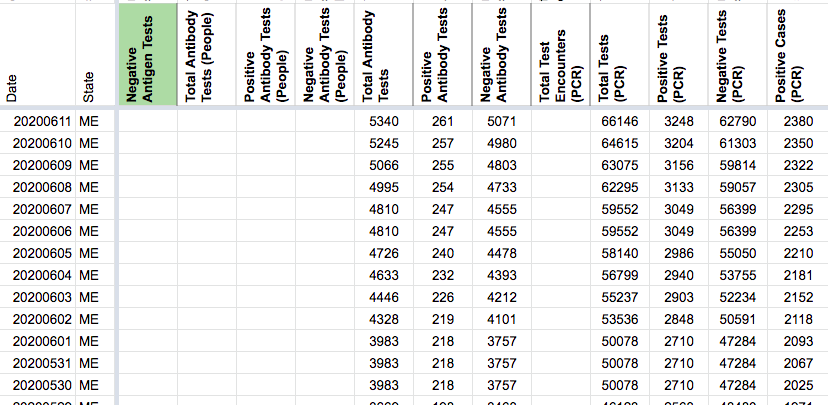
AFTER: 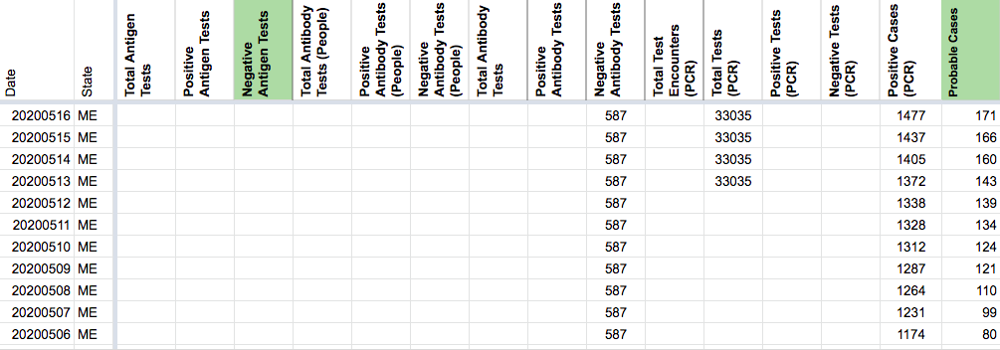
#836: [ME] Incorrect positive cases (PCR) values on 6/9 and 6/3
Issue number 836
jesseandersonumd opened this issue on September 16, 2020, 6:50 AM PDT
Labels Data quality Historical Data
State: ME
Describe the problem We had the value 2903 for positive cases (PCR) on 6/3, which contradicts screenshots [https://covidtracking.com/screenshots/ME/ME-20200603-183749.png] for that day. Similarly, we had the value of 2606 for positive cases (PCR) on 6/9, which is not correct according to screenshots [https://covidtracking.com/screenshots/ME/ME-20200609-124232.png].
Link to data source
- Screenshots linked above
Comments
BEFORE:
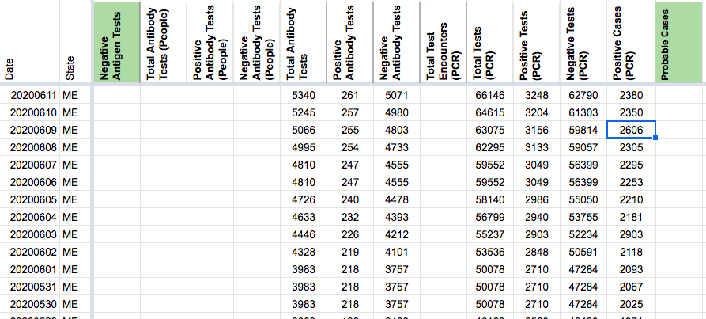
AFTER:

#691: [ME] PCL Historicals (3/15-4/28)
Issue number 691
brianskli opened this issue on July 29, 2020, 7:05 AM PDT
Labels Backfill Historical Data Missing Data PCL/SVP Historicals stale
State or US: Maine
Describe the problem
- ME data capture good after 4/29, with separated confirmed and confirmed+positive reporting.
- CTP Capture of
Cases (Confirmed and Probable)can be used to fill inPositive Cases (PCR)values between 3/15-4/28, as Maine has always reported confirmed cases.
Link to data source http://covid-tracking-project-data.s3-website.us-east-1.amazonaws.com/state_screenshots/ME/
Comments
BEFORE 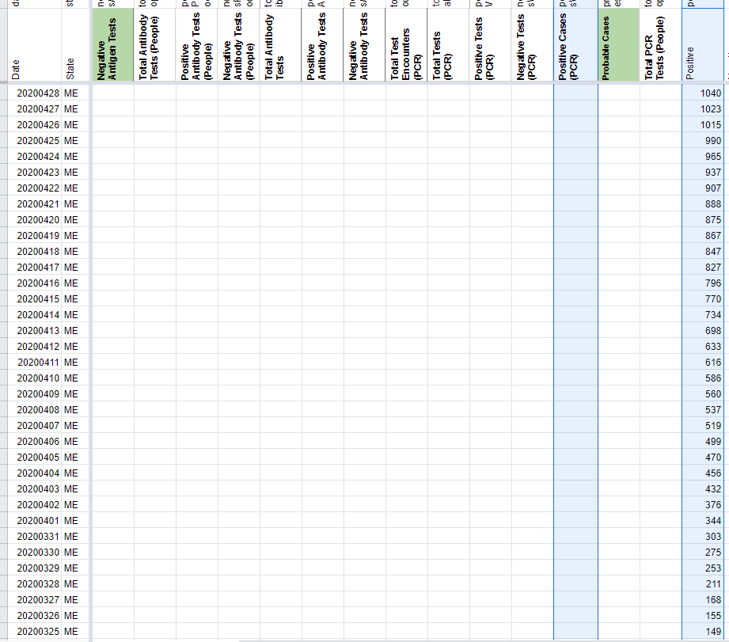
AFTER 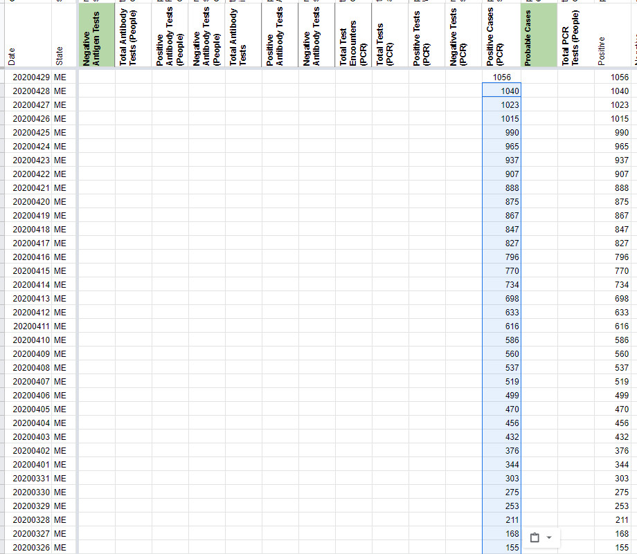
This issue has been automatically marked as stale because it has not had recent activity. It will be closed if no further activity occurs. Thank you for your contributions!
This issue has been closed because it was stale for 15 days, and there was no further activity on it for 10 days. You can feel free to re-open it if the issue is important, and label it as "not stale."
#619: [ME] Patching Total Tests Skipped 7/11
Issue number 619
karaschechtman opened this issue on July 13, 2020, 11:41 AM PDT
Labels Data quality
ME did not update its data on PCR or tests 7/11 and provided the figures on 7/12. Historicals need to be updated https://covidtracking.com/screenshots/ME/ME-20200712-181559.png
Comments
Before 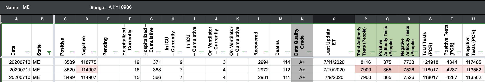 After 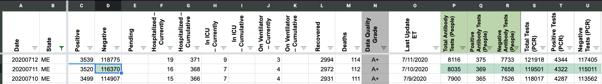
#536: [ME] Decrease in Deaths (confirmed) on 6/23
Issue number 536
schmian opened this issue on June 25, 2020, 8:32 AM PDT
Labels Data quality Historical Data stale
ME began separating confirmed and probable deaths on 6/23. We were previously recording state reported deaths as Deaths (confirmed) but it is now unclear whether they were lumped (confirmed + probable) or if those numbers were only confirmed. This should be looked into further to determine whether our historical Deaths (confirmed) values should be updated.
Some notes:
- Deaths (confirmed) decreased from 6/22 (102) to 6/23 (101)
- Since there was only 1 probable death on 6/23 it is possible that it was counted as confirmed from 6/17-6/22 until it was separated out on 6/23
- I watched the beginning of ME press releases from 6/22 and 6/24 and there was no mention of the change to confirmed and probable deaths, though this may be addressed later in the video
Comments
This issue has been automatically marked as stale because it has not had recent activity. It will be closed if no further activity occurs. Thank you for your contributions!
This issue has been closed because it was stale for 15 days, and there was no further activity on it for 10 days. You can feel free to re-open it if the issue is important, and label it as "not stale."
#524: [ME] PCL Historicals and WS2
Issue number 524
schmian opened this issue on June 25, 2020, 6:34 AM PDT
Labels PCL/SVP Historicals
As of 6/23, ME now provides separate confirmed and probable deaths. Deaths provided in the "Cumulative COVID-19 Cases by County" table are lumped but Confirmed and Probable can be separate by changing the "Case Status" in the "COVID-19 Case Trends" chart.
Death values are historically recorded in both the "Deaths" and "Deaths (Confirmed)" columns for ME. However, ME’s total death values represent lumped probable and confirmed figures, so they should only be recorded in the main "Deaths" field and confirmed and probably deaths should be separated beginning on 6/23.
Comments
Changed the Worksheet2 tooltips Updated source for Deaths (confirmed) to "Select "Confirmed" in Case Status dropdown to view Confirmed Deaths" to reflect ME separating confirmed and probable deaths in "Case Trends" chart
DZL is DCing this - 6/26 10:29
Reopening this issue: There is a week gap from 6/03 - 6/10 where we did not input values in "Deaths (confirmed)" Since deaths before 6/23 may have been confirmed ([https://github.com/COVID19Tracking/issues/issues/536]), we're keeping the "Deaths (confirmed)" column populated for now.
BEFORE 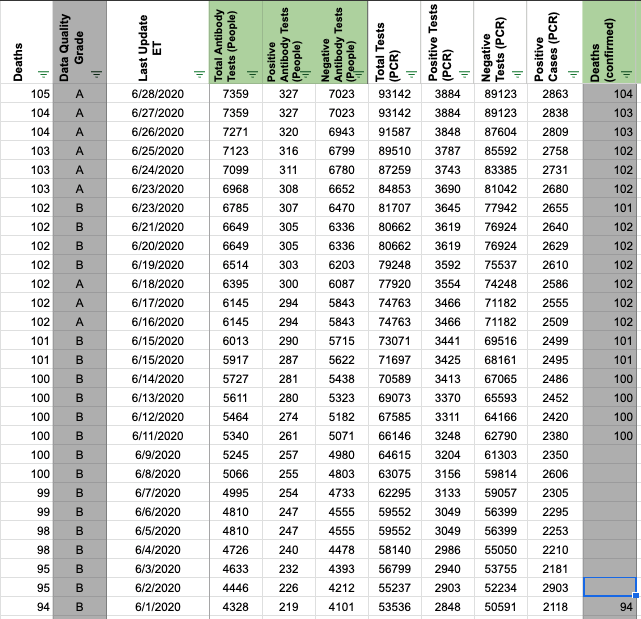 AFTER 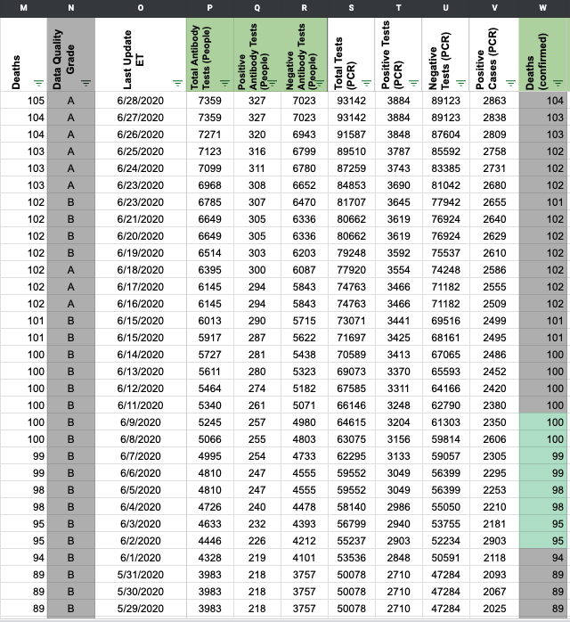
#512: [ME] Maine data page is now wrong
Issue number 512
cvermilion opened this issue on June 22, 2020, 9:34 AM PDT
Labels Data quality
The Maine CDC page that hosts daily data updates changed a few days ago.
The new link is: https://www.maine.gov/dhhs/mecdc/infectious-disease/epi/airborne/coronavirus/data.shtml
The historical data seems to be ok, but the screenshots are broken since the URL change.
Comments
@cvermilion Thanks for letting us know! This should be fixed going forward.
#169: PUBLISH TIME
Issue number 169
joshuaellinger opened this issue on April 8, 2020, 9:01 AM PDT
Labels Org stale
History
Alexis Madrigal brought two pain points to my attention: 1. He gets a lot of questions about why our data is out-of-sync with the state's dashboards. 2. He feels publishing to history at 5PM (in retrospect) feels like a mistake. 3. He likes the idea of a midnight update but worries that it would be too hard on data entry.
A group of us (Elliot/Zach/Julia/me) looked at how we could fix this.
Elliot is close to the data entry process. He said that 5PM ET is a problem because the west coast often does not report on/at the deadline. He thinks 8PM ET (5PM PT) is sufficient to insure that we get an update for each state every day in the history table (assuming they make one) .
The next step in fixing this is for Alexis to find the right people to hash out the best publish date.
RECOMMENDATION
Our current recommendation is that we move the publish step to 8PM ET but do not change the process otherwise (keep it in the 2nd push) in the near future. This would reduce operational pressure and make the numbers a lot more consistent. There are other variations that I will add as comments for separate consideration.
We also recommend adding a field, called Source Date perhaps, to the published data that tells the consumers the 'as-of' date. It would be on a per-state per-day basis. It would clear up both the questions Alexis is getting and the questions about inconsistencies between Current and History.
My only concern about this change is if we have consumers who are news organizations with evening edition cutoffs. I will list some alternatives in the comments.
IMPLEMENTATION
- [Now] Add a column called "Source Date (ET)" to the worksheet that tracks the timestamp of the data from the state and display that in the history table. This is very close to the "Last Updated (ET)" conceptually but we may want the flexibility to put a different date into the history from the actual date that we last looked at it.
That would enable us to be clear on the website about when each record was from. It would also enable us to leave the old date if the state fails to make an update in the day.
-
[Now] Back fill all the history records so that "Source Date (ET)" is the time of the 5PM push. Initially, we should make it be the same time (5PM) but eventually we may update it based on the data in the CHECKS tab that records the actual time of update.
-
[Now] Tell everyone that consumes is a high profile consumer of our data to that we are planning to switch to an 8 PM ET publish time in the near future and listen for objections.
-
[Next Week] Move the history out of the spreadsheet into a relational database. This is discussed as a separate issue but mentioned here because it is what will enable us to take the next steps without breaking the current process.
-
[Following week] Rebuild the history using an 8PM ET publish time using the Checks tab, the screen shots, and backups of the worksheet. Apply the other data fixes in the same process. Publish it on a 'version 2' of the API.
-
[Go Live] Data Entry switches to an 8PM ET publish time. The web site changes to use the new version of the API. If you use the old version, the only change is that from this date forward you have data from 8PM. If you use the new version, you get all the changes and fixes.
Comments
VARIATION 1 - Publish by Time Zone
We divide the states into groups by time zones and update each at 5PM local. This would be easy for our consumers to understand and not much different from the 'polls closed' behavior we are used to in politics.
It aligns with the data update schedule of the states. It supports consumer that really just want a single state better than a later date. It turns the one big publish into 4 smaller publishes and opens the door to enabling people to be double checkers without having to understand the idiosyncrasies of every state.
This is the best approach if we're can't wait until 8PM ET. We have not investigated if this would really work for data entry
VARIATION 2: Continuous deployment
We change our model so that the current data in history is always 'mutable'. Current never gets out of sync with history. For humans consuming our data, this would feel natural. We make the first row in the history table in a different color to make it feel different.
For our algorithmic consumers, we implement a web-hook that tells then when we change data. This has the valuable side-effect that we can publish changes to history without having to reach out of each person using our data to drive other analysis. This would make us a much more useful source of information for those systems.
FYI WY is now moving to a 3 pm (MDT, I assume) data release, so 5 pm EDT.
https://twitter.com/SethKlamann/status/1247915490170863617
Related to issue 163
VARIATION 3 - Move the Publish step out of the Google Spreadsheet.
We didn't talk about this option in detail but natural time for the consumers of the data is "as-of" midnight. The problem with this is that we are organized around having the 2nd shift be the critical shift that gets the most vetting and the other two shift have newer staff.
To scope this, we would need to move to a system where we do most of the work on the history during the 4PM shift and then 'pre-publish' it to a staging location. Then we vet every change from 4PM to midnight to decide if it should roll into the history.
POSSIBLE IMPLEMENTATION
-
Separate the 'Publish' process from the 'push' step. 'Push' happens inside of the google spreadsheet and it updates both the current and history numbers in a database table that is only visible internally. The data entry team no longer worries about publish.
-
The 4PM ET data is assumed to be well vetted. After this push, the pre-publish table is populated with those numbers and locked. Any changes between that will go into the public history have to be approved in a separate work. We could also have a threshold so that small changes are allowed through automatically but big changes aren't.
-
When the 3rd shift signs off, the 'publish manager' (a new role) looks at a (new) web page that shows only shows everything changed between 5PM and 12PM and decides what to include on a per state basis. It would be easy enough to use Twilio to send SMS messages so that the publish manager is an on-call type position rather than an active participant in the 3rd push.
-
The table would auto-publish if there is no issues at Midnight. Depending on editorial policy, we could have code the notifies people if there are unresolved issues or we could flag a few states as preliminary and update them in the morning.
This issue has been automatically marked as stale because it has not had recent activity. It will be closed if no further activity occurs. Thank you for your contributions!
This issue has been closed because it was stale for 15 days, and there was no further activity on it for 10 days. You can feel free to re-open it if the issue is important, and label it as "not stale."
Multi-edit tool-PRODUCTION - ME-reb-20210304.csv.txt Multi-edit tool-PRODUCTION - ME-reb-20210304_post.csv.txt